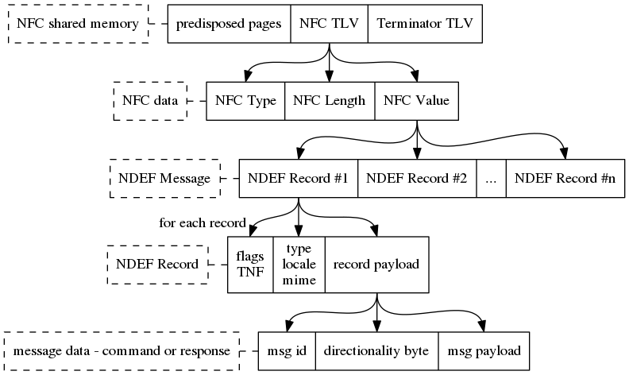

Introduction
All demo and example applications present in the SDK communicate with the outside world via the built-in NFC controller, and all do so in the same way. Any tag reader - be it an NFC-enabled Android phone, a recent iPhone or a Windows or macOS application using an NFC-to-USB dongle - must implement the counterpart of this approach to enable succesfull bi-directional communication.
Layering
The layering in the communication can be summarized as:
- NFC: all data written to the NFC shared memory is intended to be read out by any tag reader and will be formatted as TLV - Type Length Value. New data written - by either side - will overwrite the current contents.
- NDEF: the Value part (V) will form a single valid NDEF message. The message is formatted according to the NFC Data Exchange Format (NDEF) Technical Specification. This and all other NFC specifications are available on the NFC Forum.
The message can be single-record or multi-record. There are 4 record types that can be generated or parsed by the NHS31xx:
- TEXT
Uses a TNF value of 1, and an NFC Forum Well Known Type of 54h or 'T'. See the Text Record Type Definition Technical Specification.
- AAR - or more generic: an EXT record.
Uses a TNF value of 4, and can use "android.com:pkg" as External Type name to indicate an Android Application Record. See the NFC Record Type Definition Technical Specification.
- URL - or more generic: a URI record.
Uses a TNF value of 1, and an NFC Forum Well Known Type of 55h or 'U'. See the URI Record Type Definition Technical Specification.
- MIME - the media type used here to transfer binary data.
Uses a TNF value of 2, and a MimeType string adjustable at compile-time when creating MIME records. See [RFC 2046].
- MIME: the payload of a MIME record conforms to a very simple and extendable protocol, providing a way to give a clear and unambiguous meaning to different types of data the tag or the tag reader may want to share. That protocol is defined and implemented in the msg module, provided in the SDK.
A graphical breakdown of all communication layers:

Pointers
- The Tag reader section describes the low-level APDU commands that allow you to write and read to and from the NFC memory; and provides a full example how to encode and write a simple message in the NFC shared memory.
- The Modules section lists both:
- the application independent communication, under msg: Message Handler
- and the application specific extensions, under the various 'name' app.spec. messages
 1.8.14
1.8.14